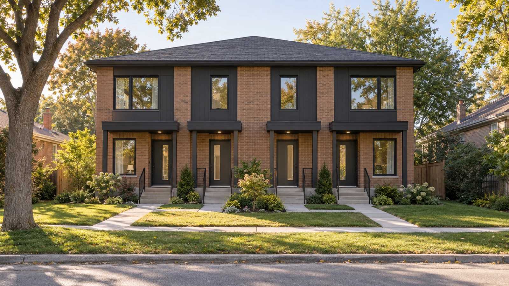

Up to 4 units on your residential lot.
On eligible lots, subject to local zoning and servicing. We handle everything from feasibility to occupancy through coordinated project delivery.
Turn your property's potential into a practical plan. SJ brings together site assessment, consultants, permits and construction for additions, conversions and small multi-unit housing.
Book a free feasibility call
What is missing middle housing?
Missing middle housing sits between a single detached home and a large apartment building: duplexes, triplexes, fourplexes and other compact multi-unit homes. An additional residential unit, such as a basement apartment or garden suite, can also add a home to an existing property.
What Ontario's Bill 23 changed
Bill 23 expanded permissions for up to three residential units on qualifying urban residential lots with municipal water and sewer services. This can mean three units in the main house, or two in the house and one in a separate accessory building, without a zoning amendment just to permit that unit count.
Four units are a separate local zoning question. Some municipalities permit them, but setbacks, lot coverage, servicing, building permits and safety requirements still apply. We start by checking what your address can support.
Read Ontario's Bill 23 reforms →What SJ handles.
A single point of coordination across the people, approvals and construction activities your project needs. The scope and responsibilities are agreed before work begins.
Feasibility & pre-construction
Review the property, intended unit count, existing building and site constraints. Compare conversion, addition and detached-unit options before committing to detailed design.
Consultants & permits
Coordinate the appropriate designers, engineers and consultants, organize submission requirements, and track municipal review comments and required approvals.
Budget & construction planning
Develop a scope-based budget and sequence of work, identify allowances and contingencies, and coordinate trade pricing so you can assess the project before construction.
General contracting & site management
Coordinate trades, deliveries and day-to-day construction activities, with attention to quality, schedule, site safety and changes to the agreed scope.
Site, access & civil works
Coordinate entrances, parking, grading, drainage and service connections where required, working with the relevant specialists and utility providers.
Inspections & occupancy
Coordinate required inspections, address deficiencies and organize close-out documents and applicable occupancy or registration requirements with the municipality.
More possibilities for your property.
Homeowners
Create space for family, explore an additional rental unit or adapt your home for changing needs. Start with what can fit safely and practically on your lot.
Investors
Assess a property's conversion or infill potential before committing capital. Establish the likely unit count, construction scope and approval path for your own financial evaluation.
Developers
Bring compact multi-unit projects from early planning into construction with coordinated consultants, trades, site works and project close-out.
Five steps from assessment to occupancy.
Site assessment
Discuss your goals, review the address and available drawings, and identify zoning, servicing and building constraints.
Feasibility & project plan
Compare viable options, establish an initial scope and budget, and decide whether to move into detailed design.
Design & approvals
Coordinate consultants, prepare permit submissions and resolve review comments before the relevant work begins.
Construction & inspections
Manage the agreed construction scope, coordinate trades and inspections, and keep you informed as the project progresses.
Completion & occupancy
Resolve deficiencies, assemble handover documents and coordinate the approvals needed before the new units are occupied.
Bradford, Newmarket, Barrie & Caledon.
The opportunity differs by neighbourhood and property. We assess the local approval path and physical constraints; rental demand and expected returns should be checked against current local comparables.
Bradford West Gwillimbury
For homeowners considering an additional suite, the starting point is the property's residential zone, parking and service capacity. Bradford's accessory-unit process includes municipal registration and building requirements.
Bradford accessory-unit guidance →Newmarket
Conversions and detached-unit proposals need a close look at the existing house, lot layout and the Town's current additional-residential-unit rules. We check the applicable permissions for your address before choosing a unit count or design.
Newmarket additional-unit guidance →Barrie
For owners exploring multi-unit conversions or infill, unit-count permissions are only part of the assessment. Setbacks, building configuration, access and service capacity determine how a proposal can work on the ground.
Barrie zoning requirements →Caledon
Caledon reports four-unit zoning permissions town-wide, subject to applicable standards. Its mix of serviced communities and rural properties makes water, wastewater and site constraints especially important to confirm early.
Caledon housing guidance →Start with the right questions.
Does my zoning allow four units?
Not every lot qualifies. Bill 23's provincial framework generally addresses three units on qualifying serviced urban residential land; four-unit permissions depend on local rules. We review the address, zone, servicing and proposed layout, and confirm the approval route with the municipality where needed.
How much will my project cost?
A basement conversion, addition and detached building have very different scopes. Structure, excavation, utility upgrades, fire separation, finishes and approval requirements all affect cost. Following an initial review, we can define the work needed for a project-specific budget, including allowances and contingency, before you commit to construction.
How long does it take?
The schedule depends on the design, required approvals, site conditions, utility work and construction scope. We map out design, municipal review and construction milestones once the preferred option is established. A conversion and a new detached unit should not be assumed to have the same timeline.
Can I finance an additional unit or multi-unit project?
Discuss project financing with your lender or mortgage broker before committing. Eligibility, equity requirements, borrowing costs and how proposed rental income is treated depend on the lender and your circumstances. SJ can provide the agreed scope, budget and schedule to support those discussions; financing approval comes from the lender.
Do I still need permits if extra units are allowed?
Yes. Zoning permission does not replace building permits, required inspections or applicable occupancy and registration requirements. Design and construction must meet the requirements that apply to the property and proposed work.
What should I bring to the free feasibility call?
Your property address, a description of your goals, any available survey or floor plans, and your target budget and timing. The introductory call helps identify next steps; detailed studies, drawings and permit work are scoped separately.
Book a free feasibility call.
Tell us your address and what you want to build. We'll discuss the opportunity, the first checks to make and how to move forward.